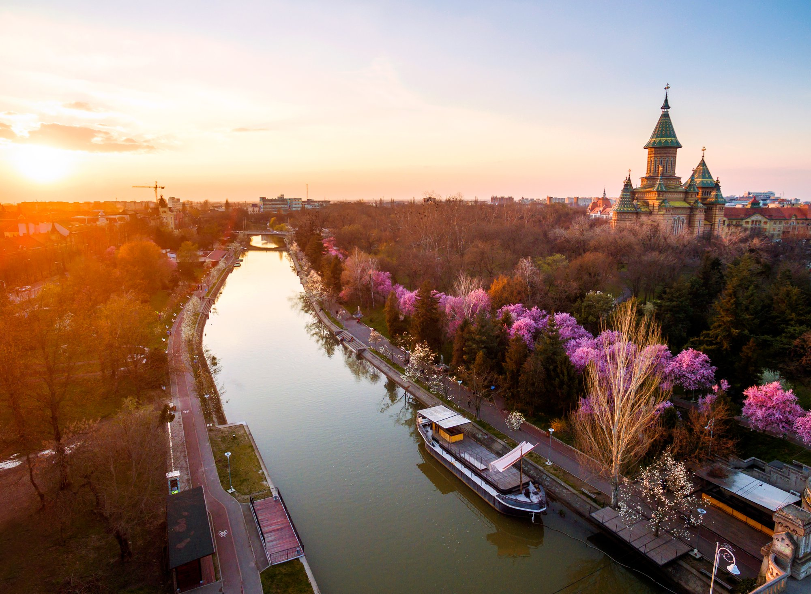

What is Timisoara 2023? By designating Timisoara with the title of European Capital of Culture for the year 2023, the city shaped its objectives, focusing on the people's influence on the community in which they live. Thus, we aim to become a city where cultural excellence prevails, providing our citizens with the confidence that through involvement and participation, we will be able to produce significant changes in the city of Timișoara. The Banat region has formed a diverse cultural palette over the centuries, being the place that currently hosts over 30 cultural communities, among which are Romanians, Germans, Hungarians, Serbians, Croatians, Italians, Spaniards and Bulgarians. This cultural palette is the added value of the city since it established the emergence of public entities dedicated especially to European citizens settled in Timişoara. It is in Timișoara that in the year 1771, the first German-language newspaper in Central and South-Eastern Europe was printed – Temeswarer Nachrichten. It was also the site of the first public library and the first film screening, and currently, the city has three state theatres in three different languages. Between 1880 and 1914, Timișoara was the most important industrial, commercial, financial and cultural city in the region, admired for its artistic excellence in music, literature, painting, sculpture and architecture, as well as its technical and scientific innovations. In 2023, the main focus is promoting the European journey of Timisoara, through which we offer our European and international partners the opportunity to present their culture as part of our common European heritage.